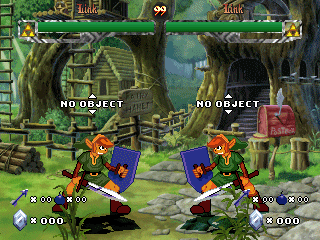
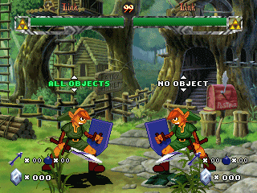
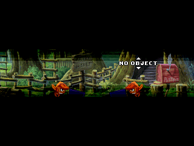
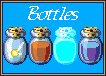

LINK FOR MUGEN - VERSION 0.95
~ CUSTOMIZATION ~
This version allows you to customize Link as you wish on several points. In order to do that, you must edit the "custom.txt" file, with any text editor (Notepad, WordPad, Word, etc.) and set the parameters to the values you want.
The main details are given directly in this file. Here are the options you can modify :
Before anything, note that all the starting parameters you modify are also applied to Link if you fight versus him in the Arcade Modes. In these modes, for instance, if you choose to have all the objects, then Link will have all the objects when you'll encounter him (and if you choose to start with random objects, Link will also have random objects when you'll fight against him). Another exemple, if you choose to start with no object, then you buy some objects and then, you encounter Link : he'll have no object (because it's the starting setting - here : no object - which is applied).
Keep this in mind when you set your custom options !
With this option, you can choose to activate or deactivate the shop. If the shop is deactivated, then, you won't be able to buy object, nor to fill your bottles or even to buy munitions (arrows and bombs).
Value 0 : The shop will be deactivated.
Value 1 : The shop will be activated.
Other value : This value will be replaced by 1, and so, the shop will be activated.
The default value is 1.
Note that activating the shop or not has no consequence on the objects you have, nor on the bottles, nor on the arrows and bombs.
This option allows you to set which objects you'll have from the beginning. The classical values are 1 to 131071. Each object has a specific value (cf. the table beneath). To have it from the beginning, you juste need to set the parameter at the concerned object. If you want to have several objects, you just need to sum up the values of the objects you want. For instance, if you want to have :
The boomerang (value = 4),
The hammer (value = 16),
The hookshot (value = 32),
The fire magic (value = 1024),
The mirror shield (value = 2048),
The Nayru's Love (value = 65536).
You just have to add these values : 4+16+32+1024+2048+65536 = 68660. So, you must set the parameter to 68660 to have all these objects from the beginning. The value 131071 allows you to start the game with all the objects. If you set a value over 131071, it'll be replaced by 131071.
Moreover, there are 3 "special" values for this option :
The value 0 : You start the game without any objects. It's the default value.
The value -1 : You start the game with randomly chosen objects ("random objects").
The value -2 : This value is particular. It tells to Mugen that you'll choose your starting objects at the beginning of the game. This option is mainly useful if you want to make battle against a friend, both using Link, but with different objects. In this case, at the beginning of the match, a scrolling menu will appear above Link :

There, you can scroll the options by using the and arrows. Here are the available options :
No object : You'll start the game without any object.
Random objects : You'll start the game with randomly chosen objects.
All objects : You'll start the game with all the objects.
Confirm with . If you press any other key, your choice won't be validated, and the default option (no object) will apply. This can be useful if you encounter Link in Arcade mode : at the beginning of the match, you'll have both a choice to make :
Select what you want (for instance : "All objects") and confirm with :

Then, as the opponent hasn't make his choice, make the battle start by pressing any button ; the screen will fade out in black for a short time, and the match will begin. This way, the adverse Link won't have any object.

Here are the different values for each object :
OBJETS VALUE Aucun objet (value par défaut) 0 Bracelet Goron 1 Arc 2 Boomerang 4 Symbole Hylien 8 Marteau 16 Ocarina 64 Grappin 32 Flèches empoisonnées 128 Baril de poudre 256 Flèches à tête chercheuse 4096 Magie du feu 1024 Magie de la glace 16384 Mushu 512 Epée Biggoron 8192 Bouclier Miroir 2048 Masque de Spooky 32768 Amour de Nayru 65536 Summary of the possible values :
Ordinary negative value : The value will be replaced by 0.
Value -2 : You'll choose the objects at the beginning of the first battle ("Objects Mode").
Value -1 : Randomly chosen objects.
Value 0 : No objects at the beginning.
Value between 0 and 131071 : You'll start with the matching object(s).
Value over 131071 : The value will be replaced by 131071.
This option allows you to choose if Link's hits can generate items or not. Items allow you to collect life, magic, arrows and bombs. So, they make the battle easier. However, if you activate them, you'll have less rupees (those which should have been generated instead of the items are missing) : so, your rupees are increasing a bit more slowly, and this could slow your character's growth (and so, the next matches could be more difficult). Anyway, whatever you choose, there are advantages and disadvantages. The choice is yours !
Value 0 : Items aren't generated on hits.
Value 1 : Items are generated on hits.
Other value : The value is replaced by 1.
The default value is 1.
In the classical Zelda games, when the player's life level is under a critical level, a resounding alert can be heard repetitively. This option allows you to replicate this behavior in Mugen. This sound is often considered as irritative (that's why it's possible to disable it), but it's also a useful alert to wisely use your life potions.
Value 0 : No sound alert.
Value 1 : A sound alert is repetitively played when your remaining life is lesser than 20% of your full life.
Other value : The value is replaced by 1.
The default value is 1.
This option allows you to keep your life level between rounds and matches. So, the arcade mode game becomes a "Suvival" mode's derivative. If you activate it, you'll need to manage your bottles in a very judicious way, in order to recover your life in critical situations ! The only ways to recover the life are : using life potions, using fairies, using complete potions and collect heart items, if items are activated.
Note that your life is kept since you're not KO in a round (here, your life is totally refilled for the next round). Thus, if you lose a round by Time Over, you'll start the next round with the life level you had in the previous round, despite the defeat.
Value 0 : The life isn't kept between rounds and matchs ("normal" mode).
Value 1 : The life is kept between rounds and matches.
Other value : The value is replaced by 0.
The default value is 0.
This option allows you to keep your power level not only between rounds, but also between matches. The power is kept in any case (either if you win or lose).
Value 0 : The power isn't kept between matches ("normal" mode).
Value 1 : The power is kept between matches.
Other value : The value is replaced by 0.
The default value is 0.
This option allows you to set how many rupees you can carry. Valid values are 0 to 999. However, to be faithful, there's a "special" value for 0, then, the other valid values are 0 to 999.
Negative value : The value is replaced by the default, 500.
Value 0 : It's a special value ; as the maximum is 0, that means you can't collect rupees. That's why when you set this value, the rupees won't be generated when you hit the opponent (but the items will, if they're activated). This value is mainly useful if you deactivate the shop, as in this case, rupees are useless.
Value between 1 and 49 : The value isn't incorrect, but it's useless, because you need at least 50 rupees to buy an object. That's why such a value will be replaced by 0.
Value between 50 and 999 : Valid value which sets the maximum rupees you can carry.
Value over 999 : The value is replaced by 999.
The default value is 0.
This option allows you to set the number of rupees you'll start the game with. It's useful only if you have activated the shop. Note that even if you have rupees from the beginning, you won't be able to buy an object before the beginning of the second match.
Valid values for this option are 0 to the maximum (set on the previous option, 7).
Negative value : The value is replaced by 0.
Value between 0 and the maximum : Valid value which set the number of rupees you'll start with.
Value supérieure au maximum : The value is replaced by the maximum.
The default value is 0.
This option allows you to set how many bottles you have at the beginning of the game, and what they contain.
This option is particular, because you don't set only one value, but four value (one for each bottle). For each bottle, you can set a value from 0 to 5 :
Value 0 : You don't have the bottle.
Value 1 : You have the bottle, but it's empty.
Value 2 : You have the bottle, and it contains a fairy.
Value 3 : You have the bottle, and it contains life potion.
Value 4 : You have the bottle, and it contains magic potion de la potion de magie.
Value 5 : You have the bottle, and it contains complete potion.
Other value : The value is replaced by 0.
The default value is 0 for the four bottles.
This option is also particular. If you activate it, using your bottles' content won't empty them. So, once filled, they can be used indefinitely, without needing to fill them anew. However :
You can use each bottle only once per match.
Once a bottle has a content, you can't change it.
Once a bottle has been used, it appears by transparence in the Bottle menu, until the end of the match.

Here are the possible values :
Value 0 : Your bottles are emptied after each utilisation, and can be refilled ("normal" use).
Value 1 : Your bottles are "infinite", and keep their content after utilisation.
Other value : The value is replaced by 0.
The default value is 0.
This option sets how many arrows you can carry.
Negative value : The value is replaced by 10.
Value 0 : It's a special value, like for the rupees maximum : it means that you can't carry any arrow. So, arrows won't be generated on hits (even if items are activated), and you won't be able to buy some.
Value from 1 to 99 : Valid value setting how many arrows you can carry.
Value over 99 : The value is replaced by 99.
The default value is 10.
This option sets how many bombs you can carry.
Negative value : The value is replaced by 10.
Value 0 : It's a special value, like for the rupees maximum : it means that you can't carry any bomb. So, bombs won't be generated on hits (even if items are activated), and you won't be able to buy some.
Value from 1 to 99 : Valid value setting how many bombs you can carry.
Value over 99 : The value is replaced by 99.
The default value is 10.
Sets how many arrows you have from the beginning. Having arrows doesn't mean you can use them !!! You must unavoidably have the bow to shoot arrows.
Valid values are from 0 to the maximum previously set (cf. 11).
Negative value : The value is replaced by 0.
Value from 0 to the maximum : Valid value setting how many arrows you have at the beginning of the game.
Value over the maximum : The value is replaced by the maximum.
The default value is 0.
Sets how many bombs you have from the beginning.
Valid values are from 0 to the maximum previously set (cf. 12).
Negative value : The value is replaced by 0.
Value from 0 to the maximum : Valid value setting how many bombs you have at the beginning of the game.
Value over the maximum : The value is replaced by the maximum.
The default value is 0.
Sets how many arrows you receive when you buy some of them in the shop. Valid values are from 1 to the maximum set in 11.
Value 0 or negative : The value is replaced by 5.
Value from 1 to the maximum : Valid value setting how many arrows you receive when buying them.
Value over the maximum : The value is replaced by the maximum.
The default value is 5.
Sets how many bombs you receive when you buy some of them in the shop. Valid values are from 1 to the maximum set in 12.
Value 0 or negative : The value is replaced by 5.
Value from 1 to the maximum : Valid value setting how many bombs you receive when buying them.
Value over the maximum : The value is replaced by the maximum.
The default value is 5.
This options allows you to have an infinite stock of arrows. If this option is activate, you won't be able to generate arrows on hits, and you won't be able to buy arrows in the shop.
Value 0 : You have a normal stock of arrows.
Value 1 : You have an infinite stock of arrows.
Other value : The value is replaced by 0.
The infinite stock of arrows prevails on the maximal stock of arrows, that is if you set the maximal stock of arrows on 0 (so, in theory, you can't use arrows), but you set an infinite stock of arrows, you'll be able to shoot arrows anyway.
The default value is 0.
This options allows you to have an infinite stock of bombs. If this option is activate, you won't be able to generate bombs on hits, and you won't be able to buy bombs in the shop.
Value 0 : You have a normal stock of bombs.
Value 1 : You have an infinite stock of bombs.
Other value : The value is replaced by 0.
The infinite stock of bombs prevails on the maximal stock of bombs, that is if you set the maximal stock of bombs on 0 (so, in theory, you can't use bombs), but you set an infinite stock of bombs, you'll be able to throw bombs anyway.
The default value is 0.
This option allows you to display or not the rupees you have.
Value 0 : The displaying is disabled.
Value 1 : The displaying is enabled.
Other value : The value is replaced by 1.
Note that if the shop is deactivated, or if the maximum of rupees is set to 0, the rupees won't be displayed, even if you set this parameter to 1.
The default value is 1.
This option allows you to display or not the arrows you have.
Value 0 : The displaying is disabled.
Value 1 : The displaying is enabled.
Other value : The value is replaced by 1.
Note that if infinite arrows are activated, or if the maximum of arrows is set to 0, the arrows won't be displayed, even if you set this parameter to 1.
The default value is 1.
This option allows you to display or not the bombs you have.
Value 0 : The displaying is disabled.
Value 1 : The displaying is enabled.
Other value : The value is replaced by 1.
Note that if infinite bombs are activated, or if the maximum of bombs is set to 0, the bombs won't be displayed, even if you set this parameter to 1.
The default value is 1.
~~~~~~~~~~~~~~~~~~